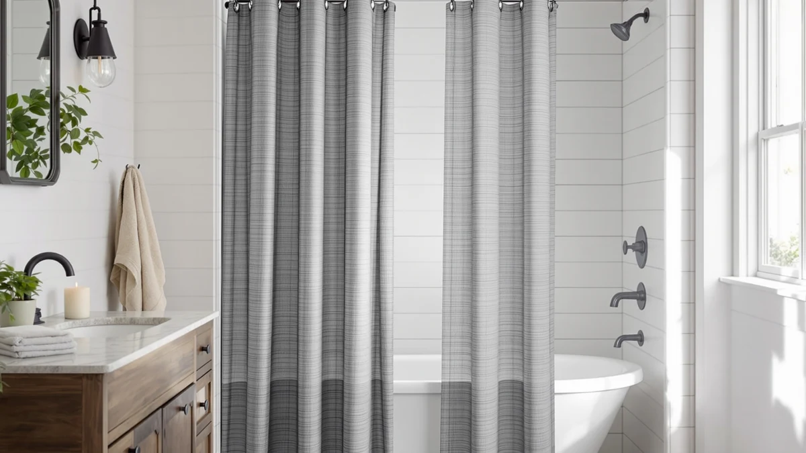

The Best Shower Curtain Liners Under $30 (2026)
Prices and picks verified as of September 2026. Independent, reader-supported reviews.


Quick Answer
The TEECK Shower Curtain Rod 32-80 is the best shower curtain liner under $30 for most bathrooms, thanks to a 32 to 80 inch adjustable width and a polyester and PEVA build, all for $19.99. If you want the lowest price, the $9.99 Gibelle Grey Eucalyptus Shower Curtain covers a standard 72 by 72 inch stall, and if you'd rather skip plastic rings entirely, the no-hook picks from XOGUIBO and SORTTO below handle that.
Our pick: TEECK Shower Curtain Rod 32-80, $19.99 Check Price on Amazon
Bottom line: our top pick is the TEECK Shower Curtain Rod at $19.99. The best budget option is the Gibelle Grey Eucalyptus Shower Curtain at $9.99.
Things to Know Before You Buy
- Polyester and PEVA blends dominate this price range. Every pick in this guide uses one or both materials, since they resist water better than thin single-layer vinyl while keeping the price under or near $30. See our PEVA-specific picks if you want more options in that material alone.
- Sizing varies more than you'd expect. Most picks fit the standard 72 by 72 inch tub or stall, but the TEECK top pick adjusts from 32 to 80 inches wide, and the SORTTO and RiverDream liners run 71 by 74 inches instead.
- No-hook designs are common at this price. Three of the seven picks here, from XOGUIBO, SORTTO, and RiverDream, use a no-hook header that skips the plastic rings that tend to crack or rust over time.
- Two picks run a few dollars past $30. The RiverDream Heavyweight Waffle No Hook and the Clara Clark Black Bathroom Set land at $32.99 and $33.99, a few dollars past our cutoff, and we kept them here since there's no lighter-weight or bundled alternative under $30 that matches what they offer.
- Current Amazon listings show a four-star average across this lineup. Weigh that alongside price and size, since a rating alone doesn't tell you whether a liner fits your shower.
The best shower curtain liners under $30 need to handle water, humidity, and daily use without tearing at the grommets, and every pick below stays under or close to that price while doing exactly that. We looked at current Amazon listings for liners and liner-style curtains built from polyester and PEVA, the two materials that dominate this price range, and compared them on stated size, material, and price pulled straight from the live listing. Whether your shower opening is a standard 72 inches or something wider, there's a fit here that keeps your floor dry without emptying your wallet.
Our pick for most bathrooms is the TEECK Shower Curtain Rod 32-80. At $19.99, it adjusts from 32 to 80 inches wide, which covers everything from a narrow stall to an extra-wide walk-in shower with the same single purchase, and its polyester and PEVA blend construction gives it more body than the thinnest vinyl liners on the market. If your opening falls outside the standard 72-inch window, this is the pick that saves you from hunting for a specialty size.
The six alternatives below cover the cases the TEECK doesn't. The Gibelle Grey Eucalyptus Shower Curtain runs under $10 for buyers who want the lowest possible price, the Dynamene Waffle Shower Curtain 256 adds texture at $17.98, and two no-hook designs from XOGUIBO and SORTTO skip the plastic rings that tend to crack over time. Two picks, the RiverDream Heavyweight Waffle No Hook and the Clara Clark Black Bathroom Set, run a few dollars past the $30 cutoff, and we kept them in this guide because they're the closest heavier-weight and matching-set alternatives once you're willing to stretch the budget slightly. If you'd rather buy a full curtain instead of a liner, our best shower curtains under $30 guide covers that side of the same budget.
Why You Should Trust Us
I'm Ilane Tall, and I cover bath and shower gear for Best Shower Curtains. For this guide to the best shower curtain liners under $30, I focused on the facts that actually change which liner fits your bathroom: stated material, panel size, and current price pulled directly from each Amazon listing.
We do not own or install every liner we cover. Instead, we research each listing closely, cross-check the stated material and size against the manufacturer's description, and compare price against what similar liners cost elsewhere in this price range. Every price, material, and size figure in this guide comes from the current Amazon listing, and we do not run a fake testing lab to manufacture claims we can't back up.
How We Picked
We started with a wide list of shower curtain liners and liner-style curtains priced near or under $30 on Amazon, then narrowed the field to listings with a clearly stated polyester or PEVA material and a stated panel size. We cut any listing that left size or material vague, since a liner that won't tell you its dimensions is a bad bet for a bathroom you can't easily return it from.
Because shoppers researching the best shower curtain liners under $30 often need a size outside the standard 72 by 72 inch footprint, we made sure this guide includes an adjustable-width option and two liners sized 71 by 74 inches. We also included two picks that land a few dollars over $30, the RiverDream Heavyweight Waffle No Hook and the Clara Clark Black Bathroom Set, since they're the closest heavier-weight and bundled alternatives for buyers with a little more room in the budget.
How We Compared
We compared each of the best shower curtain liners under $30 in this guide on the same facts: stated material, panel size, current price, and no-hook versus hook-based header design, all pulled directly from the live Amazon listing rather than promotional copy. Where a listing described a liner as heavyweight or waffle-textured, we checked that description against the product photos rather than the title alone.
We also weighed price against size and material, since a liner that costs a few dollars more but covers a wider or more unusually sized shower opening can be the better deal even outside the strict $30 cutoff. The TEECK Shower Curtain Rod 32-80 carries the widest size range in this guide, while the Gibelle Grey Eucalyptus Shower Curtain has the lowest price of any pick here.
Our Picks

TEECK Shower Curtain Rod 32-80
What we like
- Adjusts from 32 to 80 inches wide, so it fits openings a standard 72-inch liner can't cover
- Polyester and PEVA blend gives it more body than thin single-layer vinyl
- At $19.99, it comes in more than $10 under the $30 cutoff
Flaws but not dealbreakers
- The wide adjustable range means you need to measure your opening before ordering
- A blended material like this runs slightly heavier than a basic vinyl liner, so it needs sturdier hooks
- No colored or patterned version is listed alongside the standard option
| Material | Polyester / PEVA |
| Size | 32-80 Inches |
The TEECK Shower Curtain Rod 32-80 is our pick for most bathrooms because it solves a problem the other six liners in this guide don't: fitting a shower opening that isn't a standard 72 inches. Its 32 to 80 inch adjustable width covers everything from a narrow tub enclosure to an extra-wide walk-in shower, and at $19.99 it stays comfortably under the $30 cutoff for this guide.
Its polyester and PEVA blend construction gives it more body than a bargain single-layer vinyl liner, which matters most in the first few weeks of daily use when a liner sees the most water contact. You do need to measure your shower opening before ordering, since the adjustable range is also its biggest variable, but for anyone stuck between a too-narrow and too-wide standard liner, this pick removes the guesswork.

Gibelle Grey Eucalyptus Shower Curtain
What we like
- Lowest price of any pick in this guide, at $9.99
- Standard 72 by 72 inch size fits most tubs and stalls without alteration
- Grey eucalyptus print offers more visual interest than a bare vinyl liner
Flaws but not dealbreakers
- At this price, the polyester and PEVA panel runs thinner than the TEECK top pick
- The printed pattern limits how well it blends behind a patterned outer curtain
- Sized for a single standard stall, so it won't fit a wider opening without a second unit
| Material | Polyester / PEVA |
| Size | 72"W x 72"L (Pack of 1) |
The Gibelle Grey Eucalyptus Shower Curtain is the runner-up in this guide, and the reason to consider it over our top pick is simple: it costs $9.99, roughly half the price of the TEECK liner. That makes it the cheapest way to cover a standard 72 by 72 inch tub or shower stall in this entire lineup.
Its grey eucalyptus print also sets it apart from the plain white or clear liners most budget options default to, so it can work as a standalone curtain in a stall that doesn't need a second decorative layer. Buyers looking for the least expensive way to replace a worn-out liner without stepping outside standard sizing get the most value out of this pick.

No Hook Shower Curtain with
What we like
- No-hook header design skips the plastic rings that tend to crack or rust with regular use
- 75-inch drop gives a few extra inches of coverage over the standard 72-inch length
- Priced under $16, leaving plenty of room under the $30 cutoff
Flaws but not dealbreakers
- The extra length means some bathrooms will need to trim or tuck the bottom hem
- A no-hook header limits compatibility with decorative hook and ring sets
- Standard 72-inch width, so it won't stretch to cover a wider opening
| Material | Polyester / PEVA |
| Size | Standard 72"W x 75"L |
The XOGUIBO No Hook Shower Curtain with skips the plastic rings entirely, using a built-in header that slides directly onto the rod. At $15.29, it lands in the middle of this guide's price range, and the no-hook design removes one more part that can crack, rust, or snap with daily use.
Its 72 by 75 inch size runs three inches longer than the standard drop, which suits a slightly taller tub or a rod mounted a bit higher than usual. If your bathroom already has decorative hooks you want to keep using, this isn't the pick for you, but for anyone tired of replacing broken rings, the built-in header is the main draw.

Dynamene Waffle Shower Curtain 256
What we like
- Waffle-weave texture typically shows up on more expensive fabric curtains, not $18 liners
- Standard 72 by 72 inch size fits most tubs and stalls without alteration
- Stays well under the $30 cutoff while adding texture plain liners don't have
Flaws but not dealbreakers
- A textured weave has more surface area to trap water, so it may need more frequent airing out
- Costs roughly $8 more than the cheapest pick in this guide for the same standard size
- Waffle texture can show water spots more visibly than a smooth panel
| Material | Polyester / PEVA |
| Size | 72"W x 72"L (Pack of 1) |
The Dynamene Waffle Shower Curtain 256 earns its spot as the budget pick for texture in this guide. At $17.98, it's not the cheapest liner here, but it brings a waffle-weave surface that usually costs more when it shows up on fabric shower curtains instead of PEVA liners.
It fits the standard 72 by 72 inch tub or stall like most picks in this guide, so measuring isn't a concern for most bathrooms. The tradeoff for that texture is a surface with more folds to dry out between showers, so it benefits from being spread flat rather than left bunched against the wall.

SORTTO No Hook Shower Curtain
What we like
- No-hook header removes the rings that crack or rust on standard liners
- 71 by 74 inch size gives extra length with a slightly narrower width than standard
- Priced under $17, leaving over $13 of headroom under the cutoff
Flaws but not dealbreakers
- The 71-inch width is an inch narrower than standard, which can leave a gap on wider rods
- Overlaps closely with the XOGUIBO pick above, so there's little reason to buy both
- No printed pattern, only the solid listed color
| Material | Polyester / PEVA |
| Size | 71"W x 74"L (Pack of 1) |
The SORTTO No Hook Shower Curtain gives you a second no-hook option in this guide, sized 71 by 74 inches instead of the standard 72 by 75. At $16.59, it costs about a dollar more than the XOGUIBO pick above, so the choice between the two comes down to which exact dimensions fit your rod.
Like the other no-hook liners here, it skips the plastic rings that tend to fail first on a standard liner. The inch-narrower width is worth checking against your rod length before ordering, since a liner that's too narrow can leave a gap for water to escape past the edge.

RiverDream Heavyweight Waffle No Hook
What we like
- Heaviest waffle-weave construction in this guide, per the listed heavyweight description
- No-hook header design matches the XOGUIBO and SORTTO picks above
- 71 by 74 inch sizing matches the SORTTO pick for buyers comparing the two directly
Flaws but not dealbreakers
- At $32.99, it runs $2.99 past the $30 cutoff this guide is built around
- Costs roughly double the Gibelle pick for the same general liner category
- A heavier weave takes longer to air dry than the standard-weight picks above
| Material | Polyester / PEVA |
| Size | 71"W x 74"L (Pack of 1) |
The RiverDream Heavyweight Waffle No Hook is the one pick in this guide that doesn't technically fit under $30, landing at $32.99. We kept it here because it's the heaviest waffle-weave build in the lineup, and buyers who specifically want that sturdier feel don't have a lighter-weight equivalent under the cutoff to compare it against.
It shares the 71 by 74 inch sizing and no-hook header of the SORTTO pick above, so the two are a direct comparison if width and length matter more to you than staying strictly under $30. If the extra three dollars isn't a dealbreaker, this is the sturdiest option here. If it is, the SORTTO and XOGUIBO picks cover the same no-hook format for less.

Clara Clark Black Bathroom Set
What we like
- Bundles a complete set instead of a single liner, which can cost less than buying pieces separately
- Solid black colorway matches darker bathroom decor better than the printed picks above
- Covers more than one bathroom need in a single order
Flaws but not dealbreakers
- At $33.99, it's the most expensive pick in this guide and the furthest past the $30 cutoff
- Buying a bundled set means less flexibility if you only need the liner itself
- Solid black shows lint and water spots more visibly than lighter colors
| Material | Polyester / PEVA |
| Size | Complete Set |
The Clara Clark Black Bathroom Set is the priciest pick in this guide at $33.99, nearly four dollars past our $30 cutoff. It earns a spot anyway because it's the only bundled option here, pairing the liner with matching bathroom pieces instead of a single standalone curtain.
That bundling is the whole case for paying more. If you need more than a liner alone and want pieces that match without hunting separately, the complete set can work out to a better deal than buying each item on its own. If you only need the liner itself, the six picks above all cost less and do that one job equally well.
Quick Comparison
| Product | Material | Price | Rating | Best for | Get it |
|---|---|---|---|---|---|
| TEECK Shower Curtain Rod 32-80 | Polyester / PEVA | $19.99 | 4 | Nonstandard or extra-wide openings | View on Amazon → |
| Gibelle Grey Eucalyptus Shower Curtain | Polyester / PEVA | $9.99 | 4 | Lowest price, standard sizing | View on Amazon → |
| No Hook Shower Curtain with | Polyester / PEVA | $15.29 | 4 | No-hook design, extra length | View on Amazon → |
| Dynamene Waffle Shower Curtain 256 | Polyester / PEVA | $17.98 | 4 | Textured weave on a budget | View on Amazon → |
| SORTTO No Hook Shower Curtain | Polyester / PEVA | $16.59 | 4 | No-hook design, 71x74 sizing | View on Amazon → |
| RiverDream Heavyweight Waffle No Hook | Polyester / PEVA | $32.99 | 4 | Heaviest build, slightly over $30 | View on Amazon → |
| Clara Clark Black Bathroom Set | Polyester / PEVA | $33.99 | 4 | Bundled set, priced over $30 | View on Amazon → |
The Competition
We looked at more than these seven listings before narrowing the list. Several liners priced under $8 didn't make the cut because their listings left size or material vague, and a liner that won't state its dimensions is a bigger gamble than the small savings justify. We also passed on a handful of fabric shower curtains marketed as liners, since a cotton or linen panel isn't waterproof on its own and doesn't belong in a guide about liners specifically.
For most bathrooms, the best shower curtain liners under $30 come down to the TEECK Shower Curtain Rod 32-80. Its adjustable 32 to 80 inch width covers more shower openings than any single-size liner in this guide, and its $19.99 price leaves plenty of room under the cutoff. If you need the lowest price or a specific size the TEECK doesn't match, the six alternatives above cover those cases, including two, from RiverDream and Clara Clark, that ask you to stretch a few dollars past $30 for a heavier build or a bundled set.
Frequently Asked Questions
Do shower curtain liners under $30 work as well as pricier ones?
For most bathrooms, yes. The materials that dominate this price range, polyester and PEVA, resist water about as well at $10 to $20 as they do at $50, and the biggest differences between cheap and expensive liners tend to be size options and header style rather than water resistance. Spending more mainly buys you a wider size range, like the TEECK top pick's 32 to 80 inch adjustment, or a no-hook header instead of extra durability. Check our waterproof liner picks if water resistance is your top priority.
What size shower curtain liner do I need?
Most tubs and stalls take a standard 72 by 72 inch liner, which covers three of the seven picks in this guide. The SORTTO and RiverDream picks run 71 by 74 inches instead, and the XOGUIBO pick runs 72 by 75, so measure your rod width and drop height before ordering if your bathroom isn't a standard footprint.
Should I buy a no-hook shower curtain liner?
A no-hook design, like the XOGUIBO, SORTTO, and RiverDream picks in this guide, removes the plastic rings that tend to crack or rust with regular use, since the header slides directly onto the rod. The tradeoff is less compatibility with decorative hook sets, so skip it if you already own hooks you want to keep using. See our picks for mold and mildew resistance if that matters more to you than hooks.